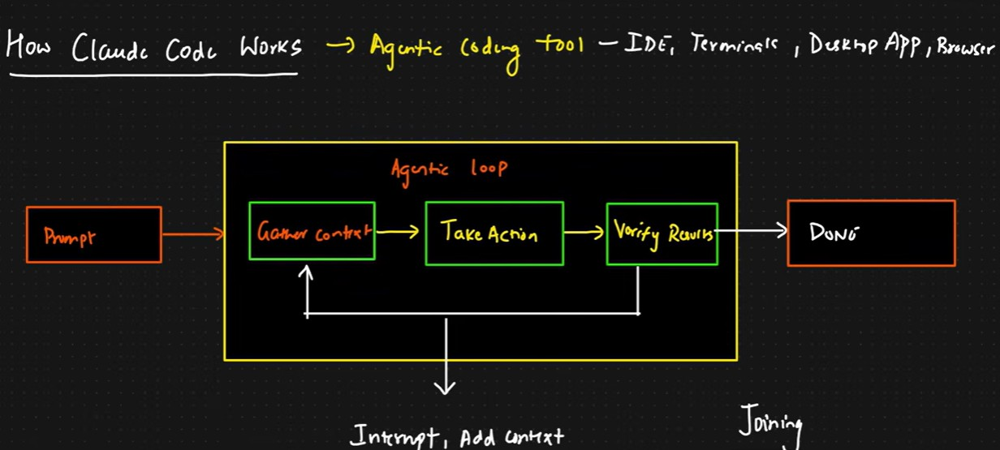

Topic
Claude
Notes on the Claude ecosystem — products, models, Claude Code, Cowork, and related tooling.
Learning materials
Products
Claude Chat
Claude Code
Claude Cowork
Claude Security
Models
Haiku
Sonnet
Opus
Fable
Features
- Claude for Chrome
- Claude for Slack
- Claude for Word, Excel, PowerPoint
Skills / plugins / connectors
Skills, plugins, and connectors — to be filled as you practice.
Claude Code
- For developers
- For vibe coding
- Agentic coding tool
How Claude Code works
Agentic coding tool — works in the IDE, terminals, desktop app, and browser. A prompt enters an agentic loop: gather context, take action, verify results — with room to interrupt and add context — until the task is done.

Claude Cowork
Like a personal AI assistant that stays on the local computer.
Plans and pricing
Free
Pro
Max
CLI access
claude --version
claudeUseful commands
| Command | Purpose |
|---|---|
claude --context / /context |
Check context — model in use, skills, conversation context |
/login |
Log in |
/agents |
Agents |
/skills |
Skills |
/models |
Models |
/mcp |
MCP |
claude -r / claude --resume |
Load previous context when starting a new Claude session |
CLAUDE.md
Save and move context into CLAUDE.md for persistent project guidance.
| File | Scope |
|---|---|
./CLAUDE.md |
Project level — can be committed and shared with the team |
./CLAUDE.local.md |
Personal overrides — do not commit; add to .gitignore |
~/.claude/CLAUDE.md |
Global — applies to all projects |
Use the /init command to create a project-level CLAUDE.md.